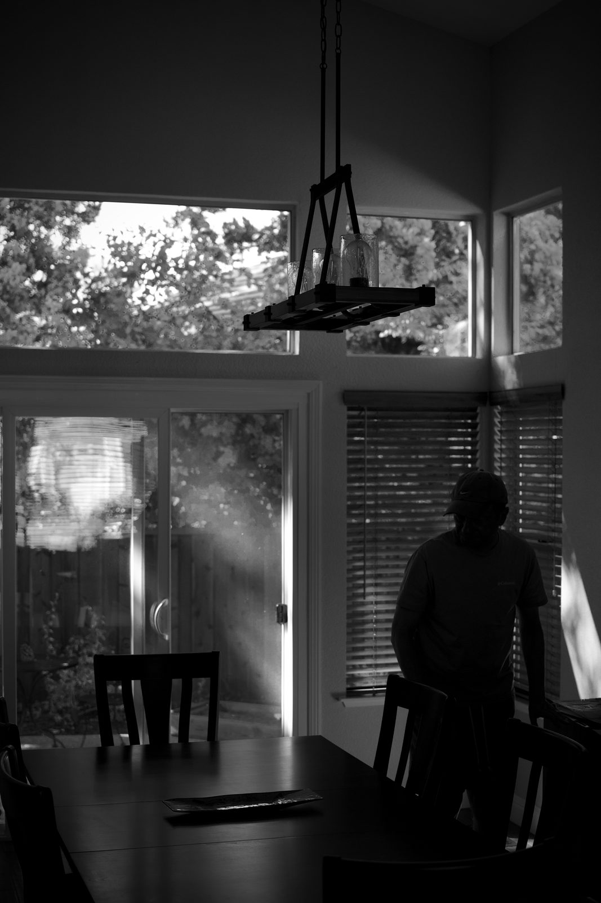
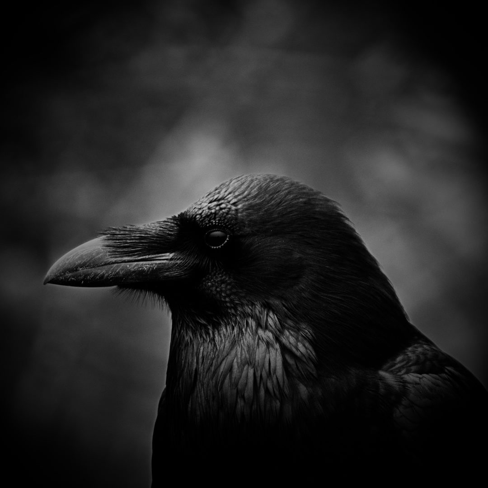

A photographer wannabe, no rime or reason, just photos I like.
Collections

About
I photograph what I run into.
Backcountry tracks and desert camps, the streets near home, people I know, and more. No rime or reason, just photos I like. More from the road on my channel, Overland Out & About.
- Based in
- East Bay, California
- Camera
- Nikon D7500
- Mostly
- Black & white, street
Lee Sagi
Collections
View all →
Lee Sagi Photography
I photograph what I run into. Backcountry tracks and desert camps, the streets near home, people I know, and more. No rime or reason, just photos I like. Based in the East Bay, California. Shoots on a Nikon D7500. Mostly black and white, street.
Collections, each with every photo and its caption:
The Streets
- Right of Way - Homeless person with a loaded cart and a long crosswalk on San Mateo Drive.
- One Match - A cigarette, a can and a sliver of sun in Oakland Chinatown.
- Invisible Inventory - Everything packed and within reach on a strip of sidewalk.
- Stop - A crossing guard holding the street with one arm.
- Corner Watch - Waiting at a corner in Oakland Chinatown.
- Peekaboo - A face at the edge of a rolled-down shutter in San Leandro.
- Lady In Red - A human color palette
- All Clear - A kick ass crossing guard in mid-wave.
- Facts Of Life - Resting their weight on a walker, halfway down the block.
- The Ghost of San Mateo - A pedestrian dissolving into the crosswalk on San Mateo Drive.
- Crossing - One wheelchair, one wide empty intersection.
Faces
- Unguarded - A laugh caught before she could stop it.
- Homecoming - Backlit, a few minutes before the dance.
- Coolest Girl - A quiet moment at dinner.
- Somewhere Else - Chin on her hands, eyes on something outside.
- Off Camera - Arms crossed, eyes on something out of frame.
- No Comment - Digging for gold
- Afternoon Coffee - Settled in.
Birds
- Watcher - A raven in close-up, Pacifica.
- Roll Call - Crows spaced down a fence line in the Pacifica fog...Hitchcock is smiling in his grave.
- Paid in Peanuts - A raven collecting its fee, Pacifica.
- Two of a Kind - Two ravens sharing one fence post, Pacifica.
- Lone Star - saw this eagle surveying his territory while walking the dog
Land & Sky
- Lines in the Fog - Surf fishermen and their rods along the Pacifica shore.
- Brushstrokes - Wind-torn clouds over a dark ridge from my backyard.
- Two Casts - Two anglers working the surf in the Pacifica fog.
- Weather Coming - Clouds stacking up over the hills from my backyard.
- Blue Silhouettes - Pilings and trees against a hard blue sky, San Leandro Marina.
- Lone Tree - A single tree under a long streak of cloud, San Leandro shoreline.
- What's Left - A split stump facing the bay, San Leandro.
- Framed - The marina through the branches, San Leandro.
- Reflections - Marina posts doubled in flat water, San Leandro.
- Last Light - Sunset through the brush from my backyard.
Selected Work
- Armor - Thorns up close in Gregory's garden.
- Ghost - Backlit on the dog bed.
- Indoor Star - a lamp above our table in a restaurant
- Floor Level - Ghost, unimpressed.
- Those Eyes - Ghost in window light.
- Shotgun - Ghost watching from the back seat.
- Behind Glass - A driver behind a window full of trees.
- Stopped - A driver checking her phone.
- Live-in burglar - A shadow by the window, right at home in the dark.
- After Hours - An empty storefront arcade at night, Castro Valley, CA.
- Still Life - A pistol, Kimber, three rounds and a jeweled skull on gray cloth.